СЮЖЕТ
| 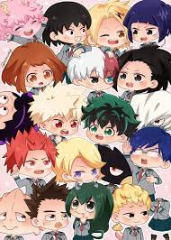 | Привіт я хочу порекомендувати аніме "Моя геройская академія". В цьому аніме ви можете нарахувати біля сотні героїв, злодіїв, мирних жителів. Трохи шо там має коїтися. В одній школі вчився хлопчик Медорія Ізуко і Кацукі Бакуго. Медорія був без причуди (причуда це супер способносьть) а у Бакуго була дуже сильна причуда взрив. Но Медорія не здавався він хотів стати героям даже без причуди. Все це проїсходило в країні Японія. І в Японії був герой Все Могутній. І їм захоплювалася вся земля. Він за день врятовував біля тисячі людей від злодіхв. Медорія і Бакуго хотіли поступити в Юей (Юей це коледж де вчят людей становитися героями) Вони змогли туда поступити. Но туда брали тільки з причудами. І як ми помятаємо що Мідорія був без причуди. Но він зустрів Все Могутного. Він передав йому свою причуду. Медорія це нікому не розказав даже свій мамі. Вони вчилися разом до них долучилися ще діти і в них зібралася не вилика група. І на одному уроці на них напали злодиї. Там на тому уроці мав бути Все Могутній. Но він не міг прийти до урока бо вного була болезьнь і за якої він не міг далі бути в своєму обліку героя. На дітей напали злодії бо вони думали що Все Могутній буде на уроці. Вони хотіли його вбити но діти начали боротися з лодіями. Но з ними було два вчителя. Вони потім перемогли злодіїв і прославилися навсю Японію. Но ті злодії не здалися і готували ще один напад на героя Все Могутьного. У злодіїв була своя команда Ліга злодіїв. Вони потім ще раз напали на дітей бо хотіли забрати Бакуго до себе бо вони побачили на скільки він сильний. І вони потім його забрали. Все Могутній | 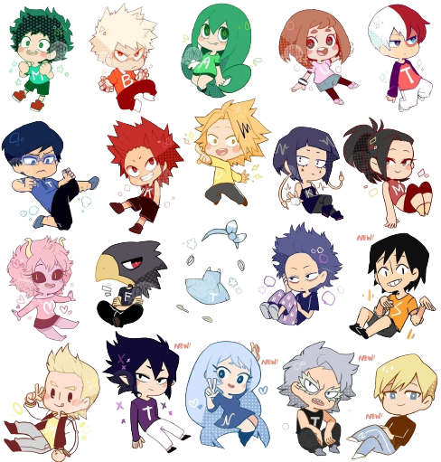 |
ВИКЛАДАЧІ
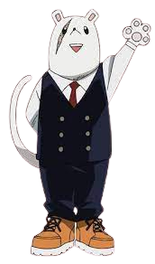Директор геройської академії
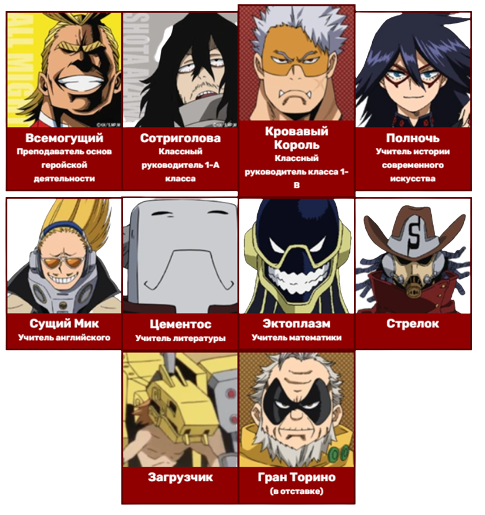КЛАС А
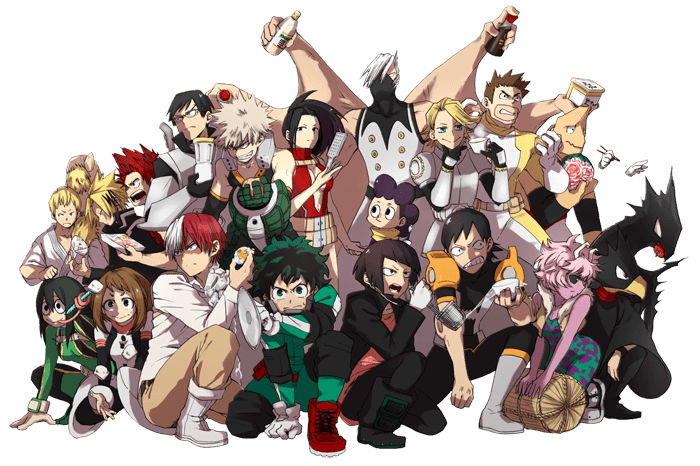 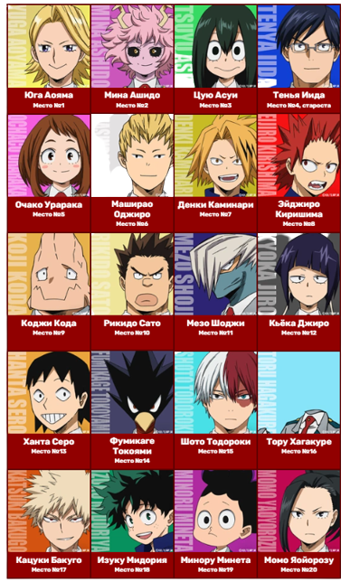КЛАС B
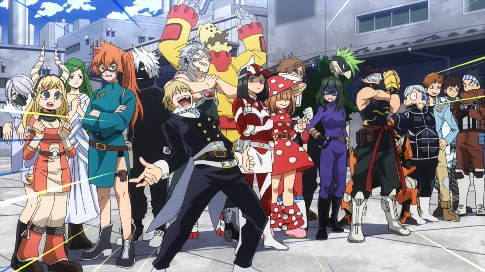 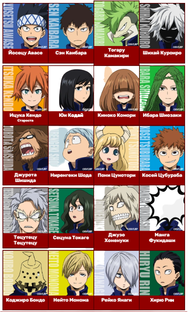ВЕЛИКА ТРІЙКА
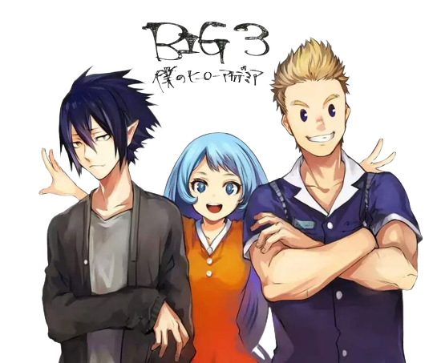 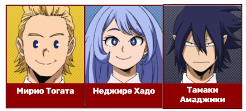ФАКУЛЬТЕТ ЗАГАЛЬНОЇ ОСВІТИ
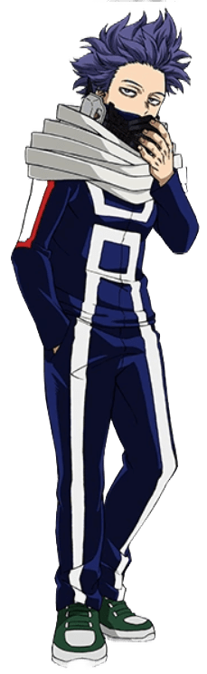Хітоши Шинсо
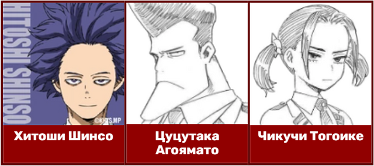ФАКУЛЬТЕТ ПІДТРИМКИ
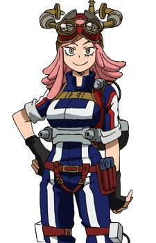Мей Хатсуме
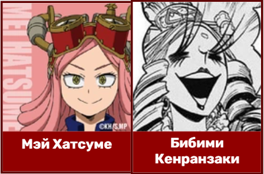ПРОФЕСІЙНІ ГЕРОЇ
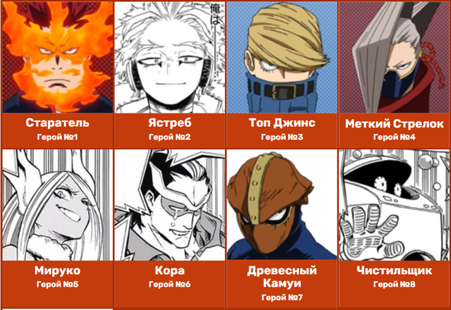 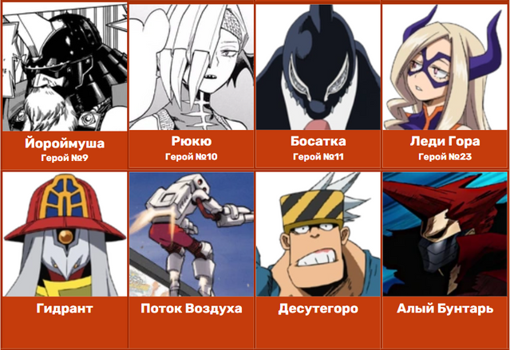 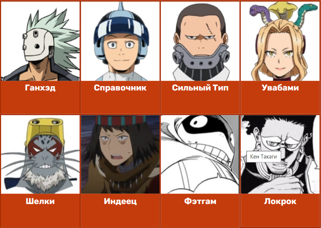 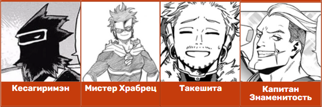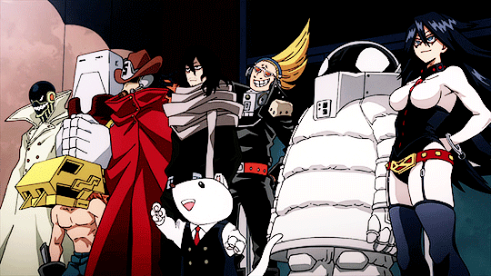